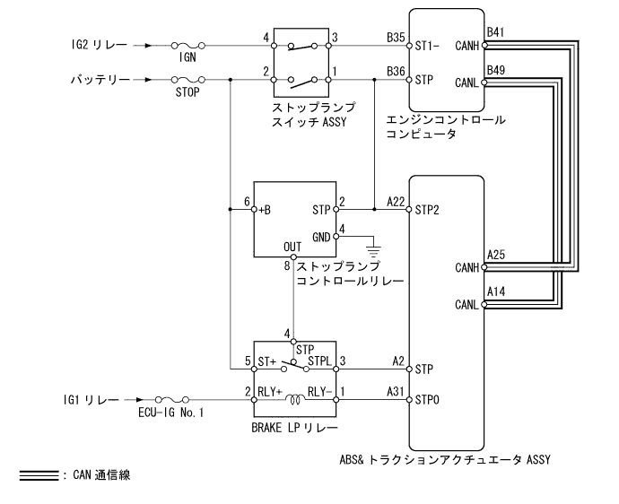
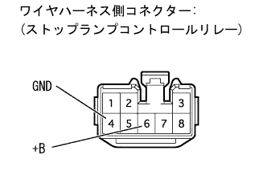
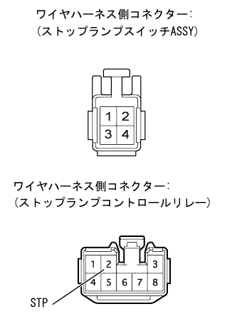
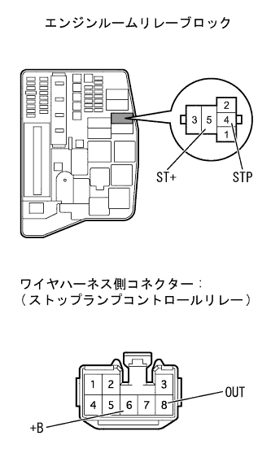
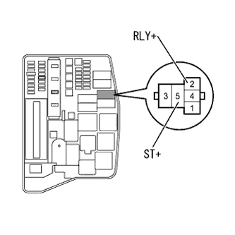
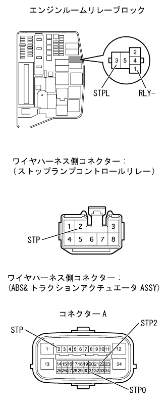
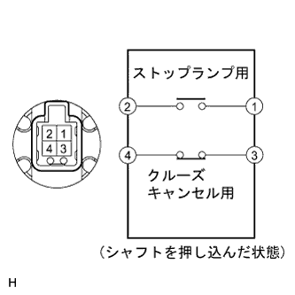
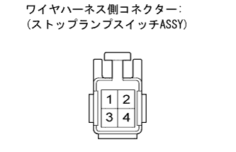
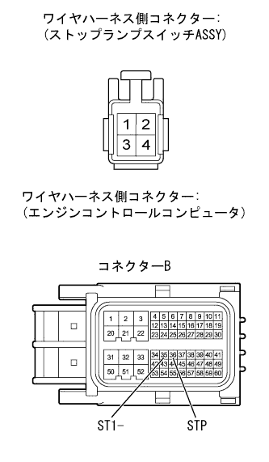

DTC P0571/52 STP Light SW System (Cruise) |
DTC P0571/76 STP Light SW System (Cruise) |
| DTC No. | Diagnosis Description
| Inspection Area |
|---|---|---|
| P0571/52 |
|
|
| P0571/76 |
|
|

)| Step 1 | Inspect Fuse (STOP, IGN, ECU-IG No.1) |
Using SST (Toyota electrical tester), measure the resistance of the fuse.
| Tester Connection | Condition | Standard |
|---|---|---|
| STOP Fuse | Always | Below 1 Ω |
| IGN Fuse | ||
| ECU-IG No.1 Fuse |
|
| ||||
| OK | |
| Step 2 | Read TaSCAN Data (Stop Light SW, C/C Brake SW (Monitoring CPU), C/C Brake SW (Control CPU)) |
Using SST (TaSCAN), follow the prompts on the screen to display the "ECU Data Monitor" screen and check the computer data. (see )
| Item Name [Symbol] | Item Description/Display Range | Standard Value | Remarks |
|---|---|---|---|
| Stop Light SW [STP] | Indicates brake pedal depressed condition Display range: OFF/ON | Brake pedal depressed: ON Brake pedal released: OFF | Stop light switch assembly circuit |
| C/C Brake SW (Monitoring CPU) [CB2] | Displays cruise cancel signal from stop light switch assembly Display range: OFF/ON | Brake pedal depressed: ON Brake pedal released: OFF |
|
| C/C Brake SW (Control CPU) [CB1] | Displays cruise cancel signal from stop light switch assembly Display range: OFF/ON | Brake pedal depressed: ON Brake pedal released: OFF |
|
|
| ||||
| OK | |
| Step 3 | Inspect BRAKE LP Relay |
Remove the BRAKE LP relay.
 |
Using SST (Toyota electrical tester), measure the resistance between the terminals of the relay.
| Tester Connection | Condition | Standard |
|---|---|---|
| 3 - 4 | When battery voltage is applied between terminals 1 and 2 | 10k Ω or higher |
| 3 - 5 | Below 1 Ω | |
| 3 - 4 | When battery voltage is not applied between terminals 1 - 2 | Below 1 Ω |
| 3 - 5 | 10k Ω or higher |
|
| ||||
| OK | |
| Step 4 | Inspect Wire Harness and Connector (Battery - Stop Light Control Relay) |
for reference.Disconnect the stop light control relay connector.
 |
Using SST (Toyota electrical tester), measure the voltage of the vehicle side wire harness connector.
| Tester Connection | Condition | Standard |
|---|---|---|
| 6 (+B) - Body ground | Always | 11 to 14V |
Using SST (Toyota electrical tester), measure the resistance of the vehicle side wire harness connector.
| Tester Connection | Condition | Standard |
|---|---|---|
| 4 (GND) - Body ground | Always | Below 1 Ω |
|
| ||||
| OK | |
| Step 5 | Inspect Wire Harness and Connector (Stop Light Control Relay - Stop Light Switch) |
for reference.Disconnect the stop light control relay and stop light switch connectors.
 |
Using SST (Toyota electrical tester), measure the resistance of the vehicle side wire harness connector.
| Tester Connection | Condition | Standard |
|---|---|---|
| 1 - 2(STP) | Always | Below 1 Ω |
| 1 - Body ground | Always | 10k Ω or higher |
|
| ||||
| OK | |
| Step 6 | Inspect Wire Harness and Connector (BRAKE LP Relay - Stop Light Control Relay) |
for reference.Disconnect the stop light control relay connector.
Check that the BRAKE LP relay has been removed from the engine room relay block.
 |
Using SST (Toyota electrical tester), measure the resistance of the vehicle side wire harness connector.
| Tester Connection | Condition | Standard |
|---|---|---|
| 8(OUT) - 4(STP) | Always | Below 1 Ω |
| 6(+B) - 5(ST+) | ||
| 8 (OUT) - Body ground | Always | 10k Ω or higher |
| 6 (+B) - Body ground |
|
| ||||
| OK | |
| Step 7 | Replace Stop Light Control Relay Assembly |
Replace the stop light control relay with a new or known good one. (see )
| NEXT | |
| Step 8 | Clear DTC |
Clear the DTCs. (see )
| NEXT | |
| Step 9 | Check DTC (Cruise Control System) |
Put the vehicle in the conditions under which the DTC is detected.
Drive within the cruise control set vehicle speed range.
Turn the main switch of the cruise control main switch ON.
Push the -SET switch to activate cruise control (vehicle-to-vehicle distance control mode).
Depress the brake pedal to cancel cruise control.
Following the SST (TaSCAN) screen display, display [Diagnosis] - [Powertrain] - [TCCS] - [DTC Freeze Data] and check the DTCs.
| Result | Proceed to |
|---|---|
| P0571 is not output | A |
| P0571 is output | B |
|
| ||||
| A | |
| Step 10 | Wire Harness and Connector (Battery - Engine Room Relay Block) |
for reference.Turn IG ON.
 |
Using SST (Toyota electrical tester), measure the voltage of each terminal of the relay block.
| Tester Connection | Condition | Standard |
|---|---|---|
| 2 (RLY+) - Body ground | IG ON | 11 to 14V |
| 5 (ST+) - Body ground | Always | 11 to 14V |
|
| ||||
| OK | |
| Go to step 9 |
| Step 11 | Wire Harness and Connector (BRAKE LP Relay, Stop Light Control Relay - ABS & Traction Actuator Assembly) |
for reference.Turn IG OFF.
Disconnect connector A of the ABS & traction actuator assembly.
Check that the BRAKE LP relay has been removed from the engine room relay block.
Disconnect the stop light control relay connector.
 |
Using SST (Toyota electrical tester), measure the resistance between the connector terminals of the vehicle wire harness.
| Tester Connection | Condition | Standard |
|---|---|---|
| 1(RLY-) - A31(STP0) | Always | Below 1 Ω |
| 2(STP) - A22(STP2) | ||
| 3(STPL) - A2(STP) | ||
| 1 (RLY-) - Body ground | Always | 10k Ω or higher |
| 2 (STP) - Body ground | ||
| 3 (STPL) - Body ground |
|
| ||||
| OK | ||
| ||
| Step 12 | Inspect Stop Light Switch Assembly |
Disconnect the stop light switch assembly connector.
 |
Using SST (Toyota electrical tester), measure the resistance between the connector terminals while operating the shaft.
| Tester Connection | Condition | Standard |
|---|---|---|
| 1 - 2 | Shaft not pushed in | Below 1 Ω |
| 1 - 2 | Shaft pushed in | 10 kΩ or higher |
| 3 - 4 | Shaft not pushed in | 10 kΩ or higher |
| 3 - 4 | Shaft pushed in | Below 1 Ω |
|
| ||||
| OK | |
| Go to step 11 |
| Step 13 | Inspect Wire Harness and Connector (Battery - Stop Light Switch Assembly) |
for reference.Make sure that the stop light switch assembly connector is disconnected.
 |
Using SST (Toyota electrical tester), measure the voltage of the vehicle side wire harness connector of the stop light switch assembly.
| Tester Connection | Condition | Standard |
|---|---|---|
| 2 - Body ground | Always | 11 to 14V |
| 4 - Body ground | IG ON | 11 to 14V |
|
| ||||
| OK | |
| Go to step 12 |
| Step 14 | Inspect Wire Harness and Connector (Stop Light Switch Assembly - Engine Control Computer) |
for reference.Make sure that the stop light switch assembly connector is disconnected.
Disconnect connector B of the engine control computer.
 |
Using SST (Toyota electrical tester), measure the resistance between the vehicle side wire harness connector terminals. (For Terminals of ECU, see )
| Tester Connection | Condition | Standard |
|---|---|---|
| 1 - B36(STP) | Always | Below 1 Ω |
| 3 - B35(ST1-) | ||
| 1 - Body ground | Always | 10k Ω or higher |
| 3 - Body ground |
|
| ||||
| OK | ||
| ||